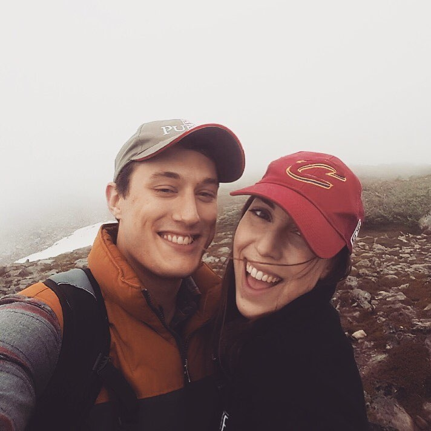

About Me

Welcome! You've reached the portfolio website for Carolyn Smith (that's me!). If you were looking for examples of my work, you're at the right place! If you have found this page by accident, stay a while and check it out. I am a software development student working my way through a 12 week boot camp program at the University of Minnesota.
My background is a little different than most Software Developers. I graduated in 2015 from The Ohio State University with a Bachelor's degree in Accounting. Like many accountants fresh out of college, I started my career as an auditor at a Big Four firm. After learning the ropes of the business world, I moved into a new role as Senior Financial Analyst as a local start-up, Bite Squad.
As time went on, I realized that it wasn't where I was working, but rather the work that was lacking. There were certain aspects of finance, and more specifically, start-up culture, that I loved. I enjoyed solving issues and creating spreadsheets that simplified other people's day-to-day activities. I wanted to be involved in all areas of the business. After working directly with the developers at Bite Squad, I noticed a gap in their knowledge and the business world knowledge. It didn't take long for me to get into coding as a hobby, and I soon realized that I could combine my skills into a career that I love.
What you will see within this website is a culmination of the skills I have acquired over the course of the full-stack program.If you have any questions about what you have seen on this website, please see our contact page to submit your inquiry!
Connect with Me
![]()